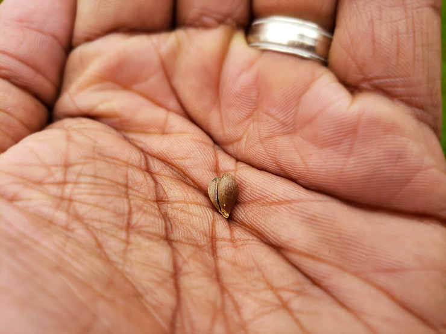
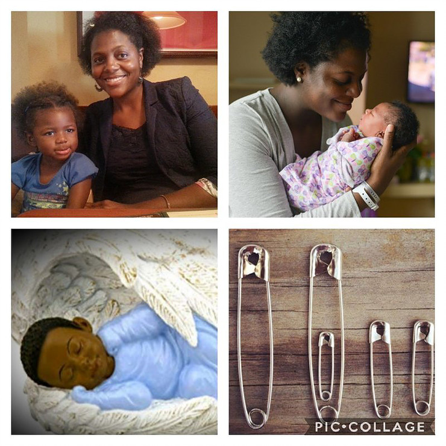

Fatherhood! What does Fatherhood mean to you? What comes to mind when you think of actually being a father? As a father, this is something I think of daily. What am I teaching my kids? What is this world teaching my kids?
I am by no means an expert when it comes to fatherhood, but I have experienced much that gives me a bit of reference to help someone else. Over the past 6, almost 7 years of fatherhood I have seen quite a bit. It has truly been a pleasure to be able to lead and guide the next generation of leaders. I have told my daughters since the day they were born that they will change the world, and believe it or not, they are well on their way.
God has blessed me to the be the father of two beautiful black girls. Raising girls in this world can be a challenge, but raising Black Girls is a whole other story. Teaching them to shine in a society that tries to tear them down every chance it gets. Teaching them to be the best and not stoop to the level of the rest. To always be the leader and only follow those that are leading you in the right direction. Shine Bright in this dark world!
With this page, I hope to share some of my experiences and if possible, just give a glimpse of the life of a husband and father trying his best to lead and guide his family.
Growing up as a young black man, I was blessed to have the many examples of Great Fathers in my life. I have a father that has always been there even to this day, leading by example in every way. Was he perfect? Of course not, there is no perfect person, therefore no perfect parent. My father along with other males in my family and those close to the family provided me with many experiences that I could reach back and pull from when it came time for me to become a father.
As a kid I thought a few times about what kind of family I would like to have when the time came. I also thought about the idea of having two sons one day, just like my father. Thing is, there are certain things you just cant plan. The gender of your child is definitely one of them.
I will say that when I found out I would be a father for the first time it was one of the greatest moments in my life. When I found out it was going to be a precious little girl, honestly I was a little nervous. I had no idea how to raise girls (as if I already knew what to do with boys).
Apple Seed Faith
Expecting More
